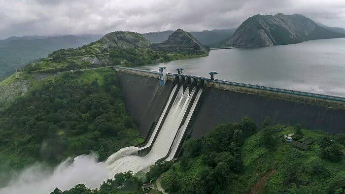

Idukki is a district in the Indian state of Kerala. It was constituted on 26 January 1972, by splitting the district of Kottayam into two parts. Its division was earlier headquartered at Kottayam city, but moved to Painavu in June 1976. Idukki district lies amid the Western Ghats of Kerala.Though it is regarded as the second-largest district in the region, it has the lowest population density among the other districts of Kerala, the urban population being higher than the rural. Idukki is rich in forests and also known as the "Spice Garden of Kerala". Till 1998, when Kuttampuzha was added to Ernakulam district, Idukki was the largest district in Kerala.
Know More
Munnar was the summer resort of the British Government in the south. The town is situated at the convergence of three mountain streams, namely Muthirappuzha, Nallathanni, and Kundala. Munnar has some of the largest tea plantations in the world. This hill station, which is more than 5,000 feet above sea level, is a tourist attraction noted for its scenic landscapes.
Vagamon is a hill station situated 1,200 meters above sea level, 37 km from Pala and 42 km from Thodupuzha. This hill station provides options of trekking, para gliding or rock climbing for adventure-seekers, and has many varieties of flora and fauna. Evergreen trees, tall grasses, and shrubs are present in the lower regions of Vagamon.